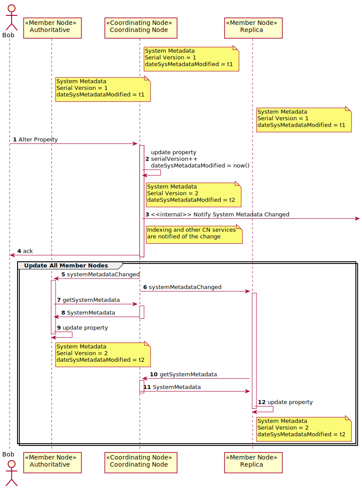
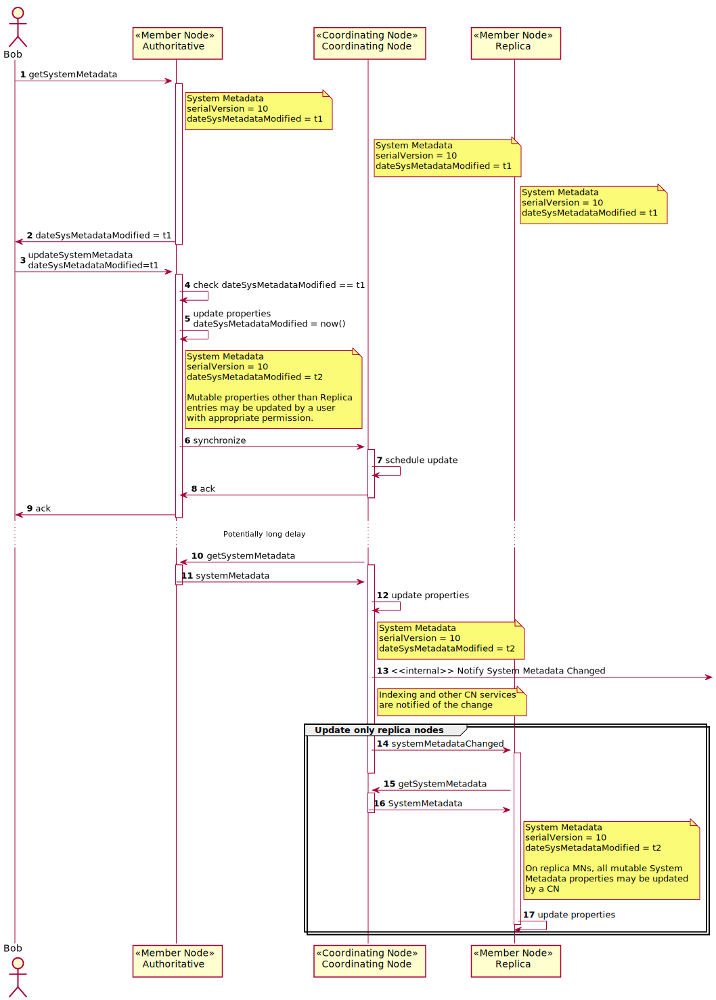

Use Case 42 - Update System Metadata Properties¶
Goal¶
Alter mutable properties of System Metadata.
Summary¶
System Metadata provides low level information about each object in DataONE and inlcudes properties that are immutable and others that may be mutated by different agents.
This use case desribes the general pattern of updating System Metadata properties by agents with authority to do so.
In version 1.x of the DataONE infrastructure, System Metadata may only be altered through Coordinating Nodes (after creation and synchronization).
In version 2.x of the DataONE infrastructure, properties of System Metadata are managed by the Authoritative Member Node with the exception of Replica information, which is managed by the Coordinating Nodes. In version 2.x, the System Metadata serialVersion property is only updated by Coordinating Nodes during replication processing. Only the Authoritative Member Node can update dataSysMetadataModified.
Actors¶
A content owner
Coordinating Node
Member Node
Replication target Member Node
Preconditions¶
Object exists within the DataONE system
Triggers¶
A user or agent wishes to alter mutable properties of System Metadata for an object.
Post Conditions¶
The properties of System Metadata are altered
All replicas of System Metadata are in sync
Search indices are updated to reflect the change
Process¶
Figure 2a. Sequence diagram for Use Case 42 illustrating the high level sequence of operations associated with altering system metadata of an object for version 1.x infrastructure where Coordinating Nodes are the authoritative source for System Metadata. In this scenario, user Bob updates properties of System Metadata (e.g. Access Policy) for an object, and that change is propogated to copies throughout the federation.
Figure 2b. Sequence diagram for Use Case 42 illustrating the high level sequence of operations associated with altering system metadata of an object for version 2.x infrastructure where Member Nodes are the authoritative source for System Metadata except for replication information (for which Coordinating Nodes are authoritative). In this scenario, user Bob updates properties of System Metadata (e.g. Access Policy) for an object, and that change is propogated to copies throughout the federation.